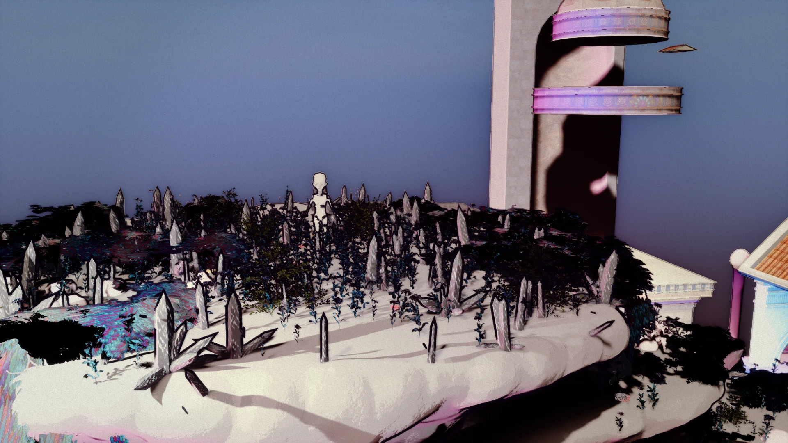

Humber College — 3D Animation
Final-year student in Toronto. Coursework and capstone practice across modeling, animation, texturing, rendering and game-art pipelines.
Artist dossier · Vol. 01 / 2026
Romantic, serene fantasy worlds — built with the craft of an artist and the systems thinking of a technical director.
Unreal Engine 5.8 / Houdini / Blender / ZBrush / procedural worldbuilding

My independent capstone, Melodia Melusina, is a rhythm-adventure world in development. These are three current directions within it: procedural architecture, monumental environmental art, and reusable realtime systems.
01 · Architecture / In progress
Map-informed housing studies, modular buildings, procedural room shells and terrain workflows developed through Houdini and Unreal. Illustration above shows the workflow concept, not a gameplay capture.
Explore procedural practice ↗
02 · World art / In progress
A surreal cloth-inspired world of monumental structures, sculptural detailing and Chladni-based material exploration, with procedural placement and environment assembly.
View world case study ↗
03 · Realtime art / Ongoing
Stylized shaders, atmosphere, landscape dressing and procedural world assembly. Production focus: repeatable controls, readable compositions and clear technical breakdowns.
Explore PCG proof ↗Selected technical practice
I work between authored assets and reusable tools: modeling, UVs, texturing, stylized materials, procedural assembly, lighting, and iteration inside the game engine.
Toolkit / hands-on
Selected technical evidence: material & shader studies · world & pipeline hub.
Final-year student in Toronto. Coursework and capstone practice across modeling, animation, texturing, rendering and game-art pipelines.
Art direction, environment construction and procedural workflows for an independently developed fantasy rhythm-adventure prototype. In production; not a commercially shipped title.
Photography, event documentation, social media support and visual communication for public-facing community activities.
Art-first galleries and technical documentation linking environment images with material workflows, procedural graphs and implementation notes.
04 / Contact · Toronto, Ontario
brennan.shepherd3900@gmail.com · fromageart.xyz